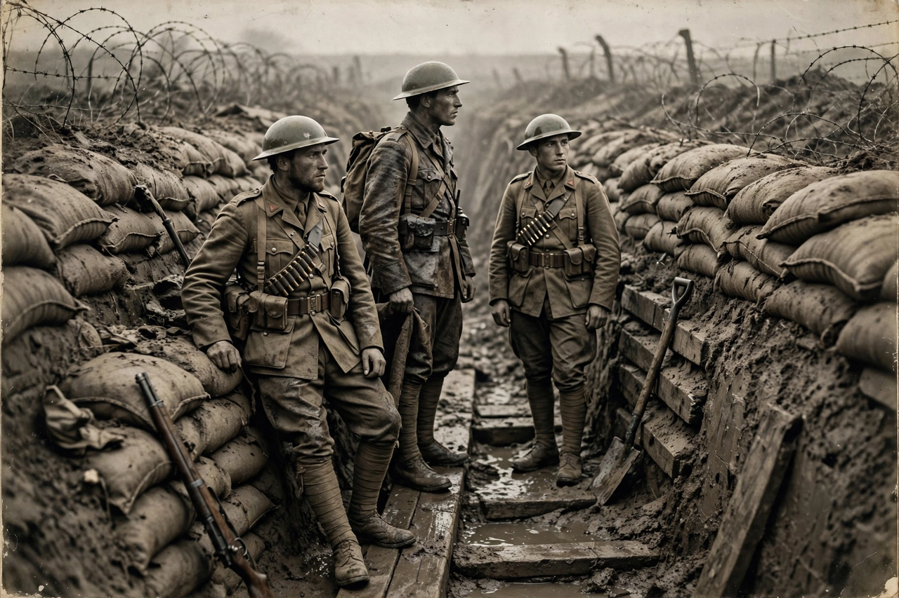

World War I
From Wikipedia, the free encyclopedia

World War I (28 July 1914 – 11 November 1918), often abbreviated WWI or WW1 and also known as the First World War or the Great War, was a global conflict between two coalitions: the Allies (principally the French Republic, the British Empire, the Russian Empire, Italy, Japan and the United States) and the Central Powers (the German Empire, Austria-Hungary, the Ottoman Empire and Bulgaria). It was one of the deadliest conflicts in history, with an estimated 15–22 million deaths and a similar number wounded.
Course
The war began after the assassination of Archduke Franz Ferdinand of Austria in Sarajevo on 28 June 1914 triggered alliance commitments and declarations of war. On the Western Front, fighting hardened into trench warfare from 1914 to 1918, with battles such as Verdun and the Somme causing enormous casualties for little ground. The Eastern Front was more mobile; Russia left the war after its 1917 revolutions.
Turning points and end
The entry of the United States in 1917, the failure of Germany's 1918 spring offensives and the Allied Hundred Days Offensive led to armistice on 11 November 1918. Fighting also transformed the Middle East, Africa and the seas (including unrestricted submarine warfare and the Battle of Jutland).
Aftermath
The Treaty of Versailles (1919) and related settlements redrew maps, ended four empires (German, Austro-Hungarian, Ottoman and Russian), created the League of Nations, and imposed reparations on Germany. The war's unresolved grievances contributed to the rise of fascism and to World War II two decades later.